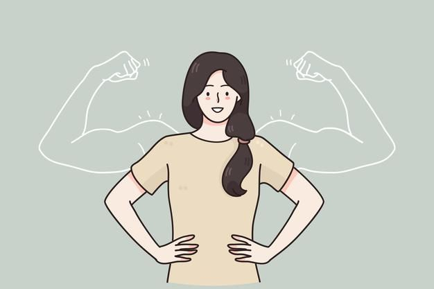
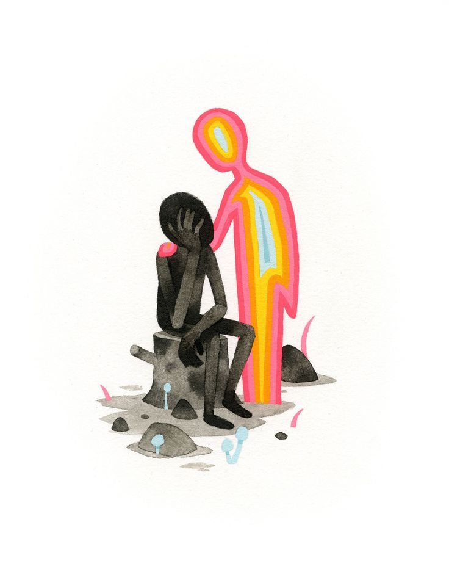
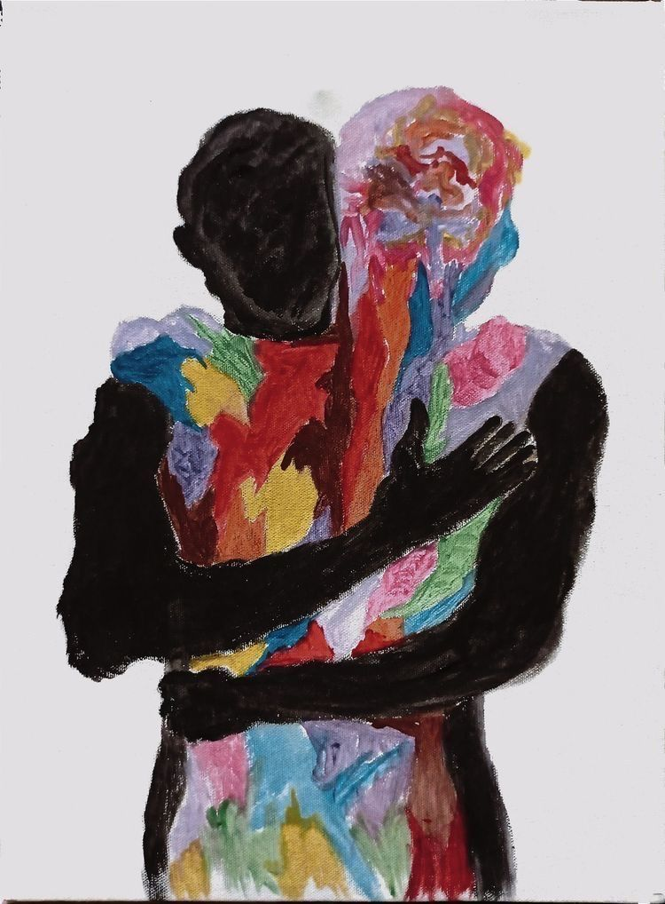

Emocionet janë sinjale
Ato na tregojnë se diçka ka rëndësi për ne, se kemi një nevojë ose se po përballemi me një situatë të vështirë.
SHËNDETI MENDOR · RRITJA PERSONALE
Kuptoji emocionet, qetëso trupin dhe ndërto besimin te vetja përmes hapave të vegjël e të qëndrueshëm.
Punoi: Yllka
Fillo eksplorimin ↓Nuk lind me vetëbesim; e ndërton me stërvitje. ♡
TË KUPTUARIT E VETES
Shpesh i shohim emocionet si armiq që duhet t’i eliminojmë. Në realitet, emocionet nuk janë pengesa — ato janë të dhëna. Kur heqim gjykimin dhe pyesim “Çfarë po më tregon ky sinjal?”, mund të fitojmë më shumë qartësi.
Ato na tregojnë se diçka ka rëndësi për ne, se kemi një nevojë ose se po përballemi me një situatë të vështirë.
Mund të ndiejmë frikë, zemërim apo zhgënjim dhe përsëri të zgjedhim me kujdes se si do të veprojmë.
RREGULLIMI EMOCIONAL
Kur emocionet janë shumë të forta, është e dobishme të ndalemi pak, ta ngadalësojmë ritmin dhe pastaj të kthehemi te problemi me më shumë qartësi.
Mos merr vendime dhe mos u përgjigj me impuls. Vendosi këmbët në dysheme dhe ndalo lëvizjet e nxituara.
Merr frymë qetë përmes hundës dhe nxirre ngadalë përmes gojës. Përsërite disa herë, pa e sforcuar frymëmarrjen.
Liro tensionin e shpatullave dhe mendo për hapin e ardhshëm që mund të të ndihmojë.



HAPËSIRA E ZGJEDHJES
Midis asaj që ndiejmë dhe asaj që bëjmë ekziston një hapësirë ku mund të ndalemi dhe të zgjedhim me vetëdije.
Thuaj ose shkruaj: “Po ndiej ankth” ose “Po ndiej zhgënjim”. Emërtimi i emocionit mund të na ndihmojë ta kuptojmë më mirë.
Pyet veten me kuriozitet: çfarë po përpiqet të më tregojë ky emocion? Çfarë nevoje mund të fshihet pas tij?
Pyet veten: cili është veprimi më i dobishëm tani? Emocioni mund të jetë ende aty, por ti mund të veprosh sipas vlerave të tua.
MEKANIZMI I RRITJES
Vetëbesimi nuk është mungesë pasigurie, por bindja se mund ta përballosh atë që vjen. Nuk ke pse të ndihesh gjithmonë i sigurt për të bërë hapin e parë.
Pasiguria është pjesë e natyrshme e çdo fillimi të ri. Nuk do të thotë se nuk je i aftë.
Beso se mund të mësosh, të provosh përsëri dhe të përmirësohesh edhe kur diçka nuk shkon siç e prisje.
Hapat e vegjël krijojnë prova të reja: çdo detyrë e përfunduar të kujton se mund të përballosh sfida.
RIFORMULIMI MENDOR
Mënyra si i flet vetes në momente pasigurie mund të ndikojë në guximin tënd për të vazhduar. Synimi nuk është të shtiremi sikur gjithçka është perfekte, por të flasim me veten në mënyrë realiste dhe mbështetëse.
“Do të dështoj me siguri.”
Mund ta bllokojë veprimin dhe të rrisë ankthin para fillimit.“Nuk jam mjaftueshëm i mirë.”
E paraqet aftësinë sikur të mos mund të ndryshojë.“Mund të mos dalë perfekt, por mund të përgatitem.”
E zhvendos vëmendjen nga përsosmëria te përgatitja.“Jam ende duke mësuar këtë proces.”
I jep vetes hapësirë dhe kohë për t’u përmirësuar.ARKITEKTURA E ZAKONIT
Truri nuk bindet vetëm me fjalë të bukura, por edhe me fakte konkrete që grumbullohen ditë pas dite.
Zgjidh diçka të thjeshtë dhe të matshme: shkruaj dy rreshta, bëj një telefonatë ose ec për pesë minuta.
Mos prit frymëzimin e përsosur. Përmbushja e një hapi të vogël ndihmon në ndërtimin e disiplinës.
Mbaj shënim përpjekjet dhe mësimet, jo vetëm rezultatin. Çdo përpjekje mund të jetë një provë e re për veten.
Kur vendos qëllime realiste dhe i përmbush, besimi te vetja forcohet gradualisht.
EVIDENCA SHKENCORE
Aftësia për të menaxhuar emocionet nuk është domosdoshmërisht një tipar i pandryshueshëm. Ajo mund të zhvillohet me praktikë dhe me strategji të përshtatshme.
Materiali përmend një meta-analizë që raportoi përmirësime nga të vogla në mesatare në rregullimin e emocioneve pas ndërhyrjeve psikosociale të strukturuara. Kjo mbështet idenë se mund të mësojmë strategji të reja dhe t’i ushtrojmë ato në jetën e përditshme.
PROTOKOLL DITOR
Përdore këtë fletë pune për të reflektuar mbi një situatë që po të ul vetëbesimin. Mund t’i plotësosh fushat direkt në website.
Shënimet ruhen vetëm për sa kohë faqja është e hapur; kopjoji në fletoren tënde nëse dëshiron t’i mbash.
PËRFUNDIM
Emocionet janë pjesë e natyrshme e jetës dhe nuk duhet t’i gjykojmë si të mira apo të këqija. Mund të mësojmë t’i kuptojmë, të qetësojmë trupin dhe të zgjedhim veprime që na ndihmojnë. Vetëbesimi ndërtohet gradualisht, përmes përpjekjeve të vogla, të përsëritura dhe realiste.
Kujdesu për veten. Çdo hap i vogël ka rëndësi. ♡